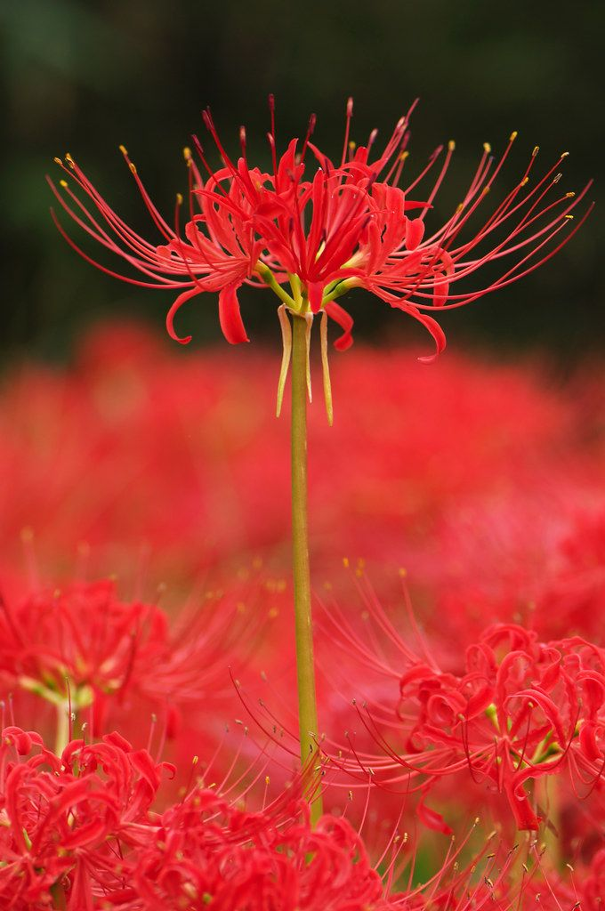
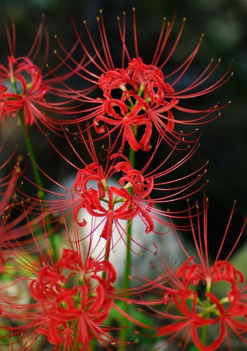
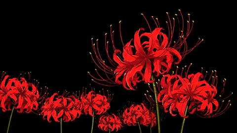

Lycoris radiata (aka. Red spider lily) is a striking and dramatic flower known for its vivid crimson petals and long, spidery stamens that give it an otherworldly appearance. Often blooming in late summer or early autumn, it seems to appear overnight, rising on tall, leafless stems. This sudden, bold emergence has given it a reputation for mystery and symbolism, especially in East Asian cultures, where it’s often associated with themes of farewell, remembrance, and the afterlife. Despite its haunting beauty, the red spider lily is toxic and best admired without being touched or ingested.

